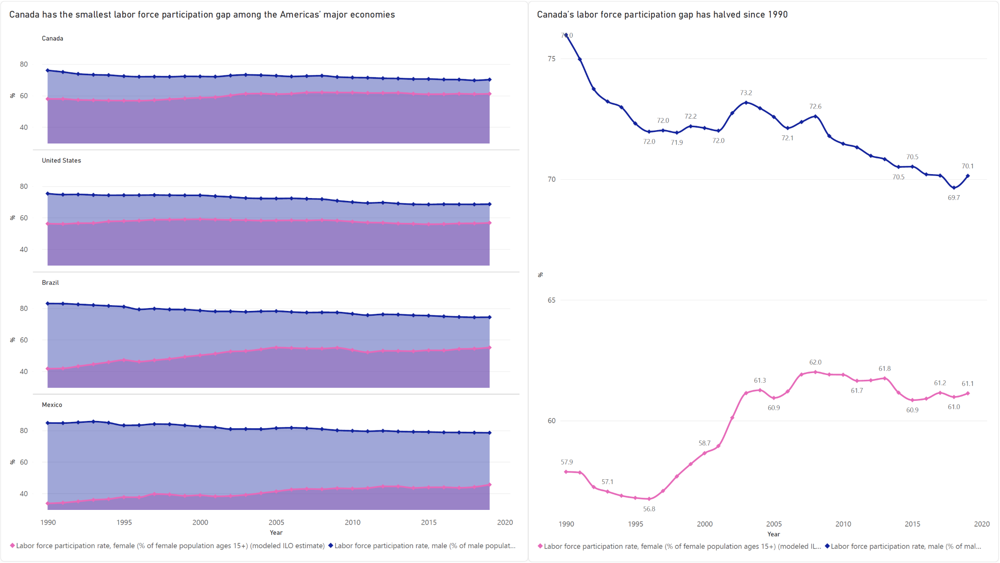
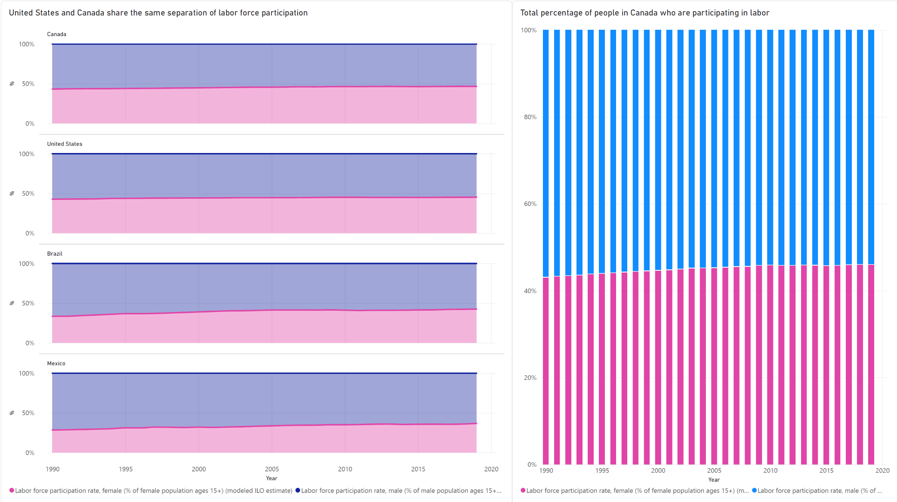

Proposition: Among the most powerful economies in the Americas, Canada has the lowest labor force participation gap.
FOR the Proposition

Design Decisions and Rationale:
- Decided to use area chart as the first thing it shows since it can more easily show how close both lines are. (+1.5)
- The line chart is a great appendix to this part since it can show how close each line is in a more precise manner. (+2)
- The color selection is to make it easier for the reader to identify which line is for each gender (blue for male, pink for female). (+2)
- Both graphs were stretched so that the difference can be better perceived.(0)
AGAINST the Proposition

Design Decisions and Rationale:
- Used a 100% stacked area charts so that the difference between countries or within the same country will be more difficult to see. (-2)
- Maintained the color codes of the previous graphs to not generate confusion. (+1)
- Using the stretch of the graphs to play with the perception of the user as if trying to show the same information, just presented in another way. (0)
Final Reflection
To be honest, at the beginning of this project I thought it was going to be simpler than what it was. Finding data to portray in a graph is easy, you just need to make sure you are using the correct type for the message you want to express, change the shape of the graph to make it simpler to read, and add colors to make it more interesting. By this logic the first two graphs were easy to do, I just needed to decide which subject of the data I was trying to tackle. I decided on the difference in gender while trying to be part of the labor force.
Next was the “misleading” part of the project. Here I realized that if I truly wanted to mislead people, I needed to use the same data, size, and colors for the graphs to be able to show that the information previously shown was incorrect. Fortunately, the data is presented as a percentage in the raw material, which gave me the idea of using percentage-type graphs to present the data, that way the misleading part of the graphs would be that people would not know what type of percentages I’m showing.
This project showed me that misleading representation of the data can be made by simply hiding information on how you are presenting the data and playing with the understanding of people. The graphs I showed, without explanation of what they are or how they are used, can be easily misinterpreted. There’s a question that says, “What bounds (if any) can you draw to distinguish ‘acceptable’ persuasive choices vs. ‘misleading’ ones (and if none, why not)?” and to that I say, that what you are showing starts being misleading when you are hiding data and making it so that people cannot guess what you are showing.